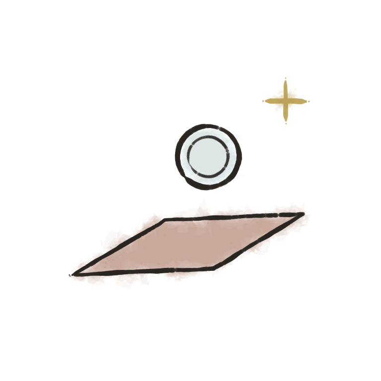
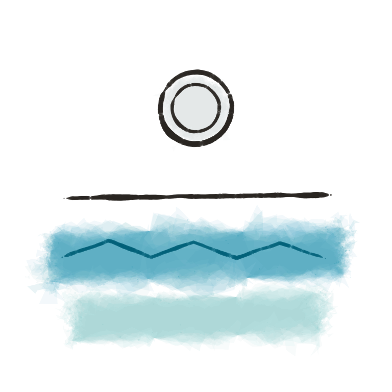
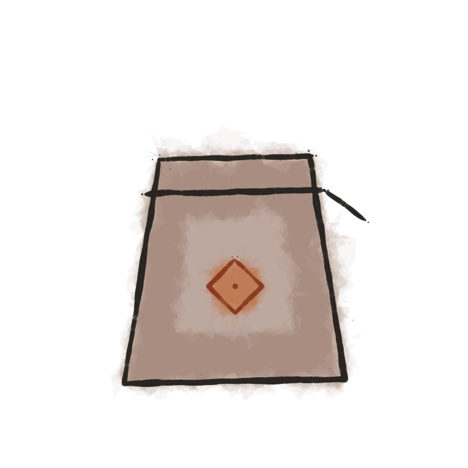

Silver 925, hammered on the bench and left matte. It wants three small habits, and it will outlast us both.

The cloth in the pouch, once a month. No paste, no dips — the matte finish is the finish.

Off before the sea, the shower and the washing-up. Salt is patient and always wins.

Air darkens silver slowly. The stamped pouch it came in is its house; let it live there.